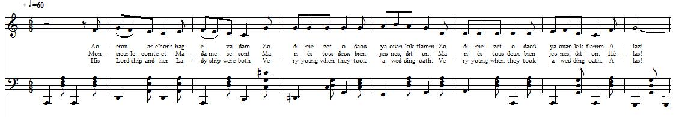

Eutru er hont hag é vadam
Monsieur le comte et Madame
His Lordship and her Ladyship
Texte recueilli par l'Abbé François Cadic
Publié dans "La Paroisse Bretonne" en mai 1907
Mélodie "Eutru er Hont"
"Eutru er hont"
Source: "La Paroisse Bretonne", mai 1907
Arrangement Christian Souchon (c) 2012
|
BREZHONEG (Stumm KLT) AOTROU AR C'HONT HAG E VADAM 1. Aotroù ar c'hont hag e vadam Zo dimezet o daoù yaouankik flamm. (diou w.) 2. Unan daouzek, an all trizek Ur mabik bihan o-deus bet. 3. Ker Kaer vel an deiz goulouet Ha vel an heol pe deiz savet. 4. Aotroù ar c'hont a c'houlenne Gant e vadam un deiz a oe: 5. "Madam kontez, din e larit, Pe seurt a gig a faot d'eoc'h bout?" 6. "Degasit-c'hwi din-me kig yar En ti-mañ n'eus ket kig klujar." 7. Aotroù ar c'hont, p'he entendas E arm fonnabl e gemeras. 8. E-kreiz ar c'hoad pa erruas Ur goulmik wenn a rankontras. 9. "Ha deoc'h bonjour, Aotroù ar c'hont Pell zo e klaskan ho rankontr. 10. An eur bremañ a zo sonet Sonet an eur ma marvefec'h. 11. Gwell eo gan'eoch buhan-mad mervel Vit e langeur seizh vloaz chomiñ?" 12. "Gwell eo ganin-me buhan-mad mervel Vit e langeur seizh vloaz chomiñ?" 13. "Aotroù ar c'hont, kerzhit d'ar ger Hag ho kwele larit ober, 14. Larit hen ober fonnaplañ Ma varvefec'h ken ma vefec'h klañv." 15. "Va mammig baour, mar va c'harit Va gwele-me c'hwi a refec'h. 16. Grait hen, grait hen ha fonnaplañ Ma varvefec'h ken ma vefec'h klañv." 17. "Larit da vadam ar c'hontez Penaos he c'hont aet d'an arme. 18. Penaos he c'hont aet d'an arme A-benn ur bloaz ez in d'ar ger." 19. "Petra zo henozh erruet Paz eo holl an dud glac'haret?" 20. "Un denik kozh o klask e voued A zo en noz-mañ tremenet." 21. "Va mamm, setu va alc'hwezhioù Roit din ar c'haerañ liñserioù. 22. Roit din ar c'haerañ 'med unan A warnan d'an aotroù ar c'hont." 23. "Va merc'h, gwiskit hoc'h abit du Maz eomp d'an oferenn da vourc'h Mur." 24. "Va mamm, din-me, he lavarfec'h: Perag en du on-me gwisket? 25. Perag dre-mañ ema ar giz Kaz gwragez en du d'an iliz?" 26. E bourc'h Mur, pe oant arruet An iliz a oa beginet 27. "Din-me, va mamm, he lavarfec'h, Perag 'n iliz zo beginet?" 28. "Va merc'h Kontez, ne ouzhon ket. Goulennit gant ar c'hloc'her mar karit." 29. "Aotroù kloc'her, din hen larit Perag 'n iliz zo beginet?" 30. "Madam Kontez, ne ouzhon ket, Goulennit gant ar c'hure, mar karit." 31. "Aotroù kure, din hen larit, Perag 'n iliz zo beginet?" 32. "Madam Kontez, ne ouzhon ket, Goulennit gant ar person, mar karit." 33. "Aotroù person, din hen larit, Perag 'n iliz zo beginet?" 34. "Madam kontez, hen n'hellan nac'h, An aotroù kont a zo a-barzh." 35. "Va mamm, setu va alc'hwezhioù, Grit pe a garit a va madoù. 36. Ar mabig bihan am-eus bet Ken kaer vel an deiz goulouet, 37. Ken kaer vel an deiz goulouet Hag evel an heol pa deiz savet, 38. Deskit eñ hag ansegnit eñ Deskit dezhañ e relijion. 39. Ma vanka dezhañ a zanvez Kassit eñ da servij ar roue. 40. Ez eomp-ni hon daou d'ar memes bez Paz eomp-ni bet er memes gwele." Transcrit par Christian Souchon |
FRANCAIS MONSIEUR LE COMTE ET MADAME 1. Monsieur le comte et Madame se sont Mariés tous deux bien jeunes, dit-on. (bis) 2. Ils avaient l'un treize et l'autre douze ans. Ils eurent bientôt un petit enfant, 3. Aussi beau que l'aube au petit matin Et que le soleil levant lorsqu'il point. 4. Voici que Monsieur le comte vint pour Demander à Madame, un certain jour: 5. "Madame la comtesse, dites-moi, Quelle viande dois-je quérir au bois?" 6. "Portez-moi de la viande de poulet, Nous n'avons plus de perdrix à manger." 7. Monsieur le comte, en entendant ceci, Vivement de son arme s'est saisi. 8. Quand il arriva tout au fond du bois, Une blanche colombe il rencontra. 9. "Monsieur le comte, bienvenue chez nous. Voilà longtemps que je cherche après vous. 10. L'heure a sonné, ne l'entendez-vous pas? Cette heure est celle de votre trépas! 11. Que préférez-vous? Mourir promptement? Ou dans la souffrance attendre sept ans?" 12. "Bien vite, il me plairait mieux de mourir Que durant sept ans rester à languir." 13. "Monsieur le Comte, rentrez-donc chez vous! Et faites préparer un lit bien doux. 14. Et faites-le préparer vivement: Vous mourrez sans être malade avant." 15. "O ma pauvre mère, O si vous m'aimez Demandez qu'un lit pour moi soit dressé. 16. Aujours'hui, faites-le dresser encor, Qu'avant d'être malade, je sois mort. 17. Quant à mon épouse, vous lui direz Qu'à l'armée son mari s'en est allé. 18. Dites-lui qu'à l'armée je suis allé Et qu'au bout d'une année je reviendrai." 19. "Qu'est-il donc arrivé ce soir ici Que tous soient de peine et douleur transis?" 20. "Un petit vieillard, un pauvre mendiant, Au cours de la nuit trépassa céans." 21. "Ma mère prenez mes clés que voilà Faites qu'on me donne mes plus beaux draps. 22. Qu'on me donne mes plus beaux draps, sauf un Que l'on sortira si mon époux vient". 23. "Ma fille, revêtez vos habits noirs. Nous allons à la messe à Mûr ce soir." 24. "Vous vous êtes à moi toujours confiée: Pourquoi donc de noir m'a-t-on habillée? 25. Pourquoi serait-ce la coutume ici Qu'on mène à l'église une femme ainsi?" 26. A Mûr lorsqu'elles franchirent le seuil De l'église, il était tendu de deuil. 27. "Vous vous êtes à moi toujours confiée Pourquoi donc l'église est-elle endeuillée?" 28. "Comtesse, ma fille, je ne sais pas. Demandez-le donc au sonneur, ma fois." 29. "Monsieur le sonneur, je voudrais savoir Pourquoi l'église est tendue de draps noirs? 30. "Madame, croyez-moi, je n'en sais rien, Le vicaire, sans doute, le sait bien." 31. "Monsieur le vicaire, dites-moi pourquoi L'église est endeuillée comme l'on voit?" 32. "Madame la Comtesse, je ne sais Demandez au recteur, si vous voulez." 33. "Monsieur le recteur, vous, vous me direz De qui l'enterrement est préparé?" 34. "Madame la comtesse, je ne puis Le celler: Monsieur le comte est ici." 35. "O ma mère, reprenez-donc mes clés: Comme il vous plaira, de mes biens usez! 36. Or j'ai mis au monde un fils à mon tour Et ce fils est aussi beau que le jour 37. Aussi beau que l'aube au petit matin Et que le soleil levant lorsqu'il point. 38. Ce fils il faut l'instuire et l'enseigner, Dans sa religion, il faut l'élever. 39. Et si ma fortune ne suffit pas Il faudra l'envoyer servir le roi. 40. Et nous qui dormions dans un même lit, Qu'un même tombeau nous accueille aussi. Traduction Christian Souchon (c) 2013 |
ENGLISH HIS LORDSHIP AND HER LADYSHIP 1. His Lordship and her Ladyship were both Very young when they took a wedding oath. (twice) 2. She was twelve and he was only thirteen. Soon a baby boy appeared on the scene. 3. And he was as fair as the rising sun His beauty could be compared to none. 4. His Lordship the Count asked on that day The Countess his wife, when in bed she lay: 5. "O Countess, my wife, tell me what I should Hunt, what kind of game in the nearby wood?" 6. "I'd prefer, by far, some fowl meat to eat. Partridge flesh is rare of late, such a treat!" 7. His Lordship the Count, on hearing her speech, Shouldered his gun which he kept within reach. 8. When he had come to the mid of the grove Whom should he encounter but a white dove. 9. "Lord, I am so pleased to wish you good day; Was waiting long for you to come my way. 10. Now the hour has rung, did you hear it ring?, The hour has rung when you must be dying. 11. Now, do you prefer rapidly to die Or seven long years sick in bed to lie?" 12. "I'd rather, for sure, decede speedily Than seven years lie in bed languidly." 13. "Your Lordship the Count, now back home you go And have them make you the best bed they know, 14. Have them make your bed quickly. You know why: Or you would risk being sick before you die." 15. "O my mother dear, if you love your son Please order that my bed quickly be done. 16. Have my bed be made and made rapidly Before I should die of a malady." 17. "O please tell the Lady Countess, my wife That her Count has left for an armed strife, 18. That he left to fight out on the frontier And that he will be back home in a year." 19. "O tell me what happened here overnight That all in this house with dismay did smite?" 20. "An old beggar man who asked for food Whom from dying here we could not preclude." 21. "My mother I beg you to keep my keys Let me have my best bed sheets, if you please. 22. Let me have my best bed sheets. All but one For my husband, when he comes, it was spun." 23. "My daughter, you should put on your black dress We are leaving to Mur town to hear Mass." 24. "Mother tell me the truth. No lie or sham! Why must I be clad in black, as I am? 25. "Did it come in current use to impose On girls to be sent to church in black clothes?" 26. When they came to Mur where mass would be sung, The church was all over with black veils hung. 27. "O Mother tell me, no pretence or lie, The church is hung with black veils, tell me why!" 28. "O Countess, my daughter I do not know. The bell ringer might have heard of it, though." 29. "O bell ringer tell me the truth,. Don't lie The church is hung with black veils, tell me why!" 30. "Your ladyship, I do not know, for sure But the curate could an answer procure." 31. "O Reverend father, tell me no lie, The church is hung with black veils, tell me why!" 32. "Your Ladyship, for sure , I do not know. The parson himself could answer it, though." 33. "O Reverend father, tell me no lie, The church is hung with black veils, tell me why!" 34. "Countess, it's a thing I cannot deny, The Count, your husband on the trestles lie" 35. "My mother I beg you to keep my keys You may dispose of my goods as you please. 36. I have brought into the world a fair son And he is as fair as the rising sun, 37. O he is as the rising sun as fair And his beauty is, aye, beyond compare. 38. You shall for his education provide. Let the Christian Faith in life be his guide. 39. If ever his wealth should happen to wane Let him serve the king and defend his reign. 40. In my husband's grave now I shall be laid As both of us have slept in the same bed." Translation: Christian Souchon (c) 2013 |
NOTES:
|
C'est une des innombrables versions de la complainte généralement connue en France comme celle du "Roi Renaud". L'Abbé François Cadic l'a recueillie vers 1892 dans le domaine vannetais, chantée, nous dit-il, par une couturière de Pontivy. A la différence de la version du "Barzhaz", "Le Seigneur Nann" et de la "Sonen Gertrud get hi vam" (Chanson de Gertrude et sa mère) donnée par M. Dufilhol dans son roman "Guionvac'h", la présente ballade situe l'action: aux environs de Mûr-de-Bretagne, à une vingtaine de kilomètres au nord de Pontivy, en bordure de la forêt de Quénécan. D'autre part, dans l'introduction, le messager de la mort n'est pas un être surnaturel (une fée, la biche blanche de sainte Ninoc'h...) mais une simple colombe. La forêt de Quénécan est le théâtre de l'histoire horrifique de l'époux de Sainte Triphyne, le sinistre Comorre, ce Barbe-Bleue frappé par la vengeance divine, dont on montre encore le château en ruine sur les bords du Blavet. |
This is one of the countless versions of a lament, well-kown in France as the "Ballad of King Renaud". The Reverend François Cadic learnt it, so he writes, around 1892 in the Vannes dialect area, from the singing of a Pontivy dressmaker. Unlike the versions in the "Barzhaz", "Sir Nann" and in M. Dufilhol's novel "Guyonvac'h", "Sonen Gertrud get hi vam" (Song of Gertrude and her mother), the present text locates the plot: in the Mûr-de-Bretagne area, a sore of kilometres north of Pontivy, on the verge of the forest of Quénécan. Besides, in the introduction, the messenger of death is no supernatural wight (neither a fairy nor Saint Ninoc'h's white doe...) but a common dove. The Forest of Quénécan provides the scenery for the horrific story of Saint Triphyne's husband, the nefarious Comorre, a Blue-Beard who was smitten by divine vengeance. His dilapidated castle still overlooks the banks of the Blavet river. |
Table